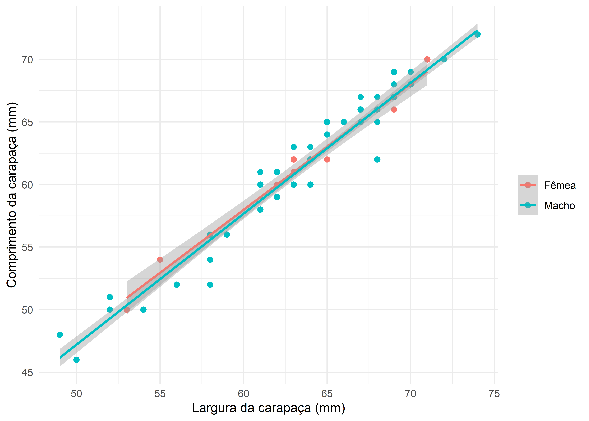
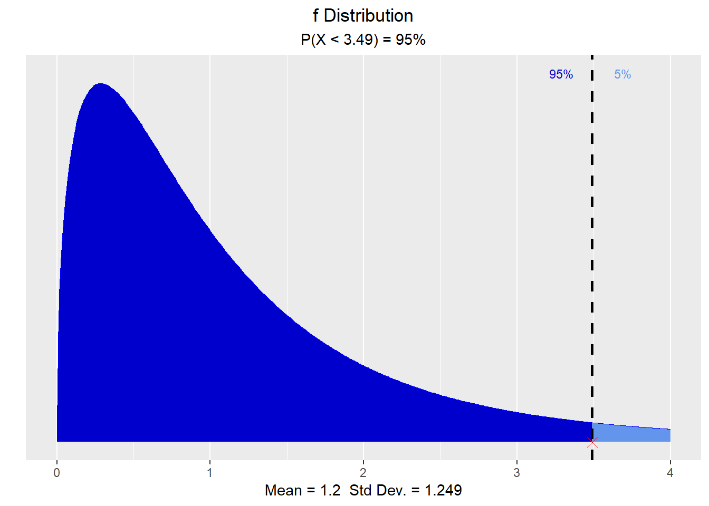

1 Introdução
A integração eficaz de dados, análises e interpretação em um único fluxo de trabalho é essencial para o avanço da pesquisa científica e da educação estatística. Com o advento de plataformas de publicação científica, como o Quarto®, que é uma ferramenta de código aberto baseada em Pandoc, essa integração torna-se não apenas possível, mas também acessível a um público mais amplo. O Quarto permite que textos, imagens e códigos sejam combinados de forma harmoniosa em documentos finais, promovendo uma abordagem interativa e integrada ao aprendizado e à divulgação científica.
Nesse contexto, o objetivo deste documento elaborado no ambiente Quarto foi desenvolver um modelo simplificado destinado à execução de análises estatísticas variadas. Este modelo permite aos usuários carregar seus próprios conjuntos de dados, realizar análises pertinentes e discutir os resultados obtidos, tudo dentro da filosofia da Programação Literária.
Os usuários podem selecionar os pacotes específicos da linguagem R que melhor se adequem ao seu tipo de análise desejada, o que requer a necessidade de pesquisar e compreender códigos em R apropriados para a análise ou teste estatístico específico em questão e os resultados alcançados podem ser discutidos e apresentados de maneira compreensível. Adicionalmente, este documento proporciona orientações práticas sobre a estruturação eficiente de pastas e arquivos, facilitando o trabalho não apenas individual, mas também colaborativo em projetos de natureza estatística.
Nas próximas seções, explicaremos como utilizar esses códigos de execução em Linguagem R, além de organizar todo o projeto de análise em uma pasta individual. Através deste modelo guia, buscamos não só facilitar o processo de análise estatística, mas também promover a Programação Literária como um meio eficaz de educação e comunicação científica.
Substituição da Introdução:
Quando fizer a adaptação à sua análise específica, todo o texto desta introdução pode ser substituído. Recomenda-se que a (o) cientistica apresente os seguintes pontos:
- Assunto e questão-problema: Defina o foco e a problemática do seu estudo.
- Revisão de literatura: Apresente o que já foi explorado sobre o tema.
- Hipóteses de pesquisa: Proponha suposições baseadas em estudos anteriores.
- Objetivo: Esclareça o propósito do seu trabalho.
Referências bibliográficas:
A próposito do uso de referências bibliográficas neste documento, utilize Zotero, PubMed, Crossref, R Packages, etc. Para isso, acese o menu Insert –> Citation e cite referêencias do seu estudo. Neste exemplo, em estudos sobre quitosana, referências como são citadas assim: as quitinas/quitosanas são biopolímeros mais abundantes na natureza após a celulose (Agboh & Qin, 1997; Dash et al., 2011). Sobre as referências, há ainda dois pontos que queremos destacar:
Gerenciador de referências: O Quarto oferece compatibilidade com o gerenciador de referências bibliográficas Zotero. Se você prefere usar outros gerenciadores gratuitos como o Mendeley, vale notar que, atualmente, o Mendeley não se integra diretamente ao RStudio. No entanto, existe uma solução alternativa. Primeiro, instale o Zotero e crie uma conta nele. Depois, transfira suas bibliografias do Mendeley para o Zotero. Finalmente, dentro do RStudio, acesse Opções Globais, clique na aba Rmarkdown e, na subseção Citations, insira o diretório de instalação do Zotero no seu computador, normalmente localizado em: C:/Users/Nome_Usuario/Zotero. Aleém desse procedimento, o Zotero pode importar diretamente de uma arquivo bibtex (
*.bib). Estes procedimento permites o gerenciamento eficaz de suas referências diretamente no RStudio.Estilo da revista. É possível mudar o estilo de saída de um determinada revista incluindo no YAML o nome do seu arquivo csl. Para baixar estilos, vá neste link de Estilos e baixe o estilo de citação de sua revista (também há esta outra font no github). Após baixar o arquivo csl, coloque-o na mesta pasta onde se encontra o arquivo .qmd. Para este manuscrito, baixamos o estilo da revista Fod Chemistry.
2 Metodologia
2.1 Inserindo uma imagem
Os caranguejos com os quais trabalhamos foram da espécie Ucides cordatus (Figura 1), machos e fêmeas. A captura ocorreu nos períodos chuvoso e seco, e nas localidade de Caratateua e Ajuruteua. Esta imagem foi inserida usando o menu insert –> Figure/Image e depois inserida a sua legenda e ID.
2.2 Importando dados
A Tabela 1 abaixo representa os dados brutos e foi exibida a título ilustrativo, com os dados distribuindo-se em várias páginas navegáveis. Poderíamos importar dados de outras fontes, como os coumente usados arquivos .csv ou carregar dados de pacotes do R. Os dados abaixo usaram o pacote readxl que mantém a estrutura do tidyverse.
2.3 Dados transformados
Mostramos abaixo os códigos utilizados para transformar os dados em um resmo estatístico e apresentá-los numa tabela formatas (Tabela 2).
dados_trans <- caranguejo |> filter(local == "Ajuruteua") |>
group_by(estacao, sexo) |>
summarise(Contagem = n(),
Média = round(mean(lc, na.rm = T), 2),
SD = round(sd(lc, na.rm = T), 2)) |>
ungroup()
gt(dados_trans)| estacao | sexo | Contagem | Média | SD |
|---|---|---|---|---|
| Chuvosa | Fêmea | 216 | 65.76 | 6.60 |
| Chuvosa | Macho | 239 | 70.41 | 4.47 |
| Seca | Fêmea | 10 | 63.20 | 5.83 |
| Seca | Macho | 88 | 63.45 | 6.32 |
3 Códigos em linha
Além de por códigos da linguagem R em chunks (como acima e mais abaixo), é possível colocar pequenos códigos nas linhas de textos para saída simples de dados. Ex.: a média do comprimento da carapaça de todos os caranguejos foi de 55.99 mm. O número total de caranguejos foi de 993.
3.1 Análise estatística
Neste seção, mostro como inserir também referências aos pacotes utilizados na Linguagem R. Por exempo, as figuras deste manuscrito foram feitas usando o pacote ggplot2 (Wickham, 2016), enquanto a maioria das tabelas foram formatada usando o pacote (Zhu, 2024). As tabelas também foi inseridas com o pacote gt(Iannone et al., 2024).
3.2 Inserção de Equações
A relação peso vs comprimento foi avaliada conforme o modelo de potência segundo a Equação 1 abaixo.
\[ P = a*L^b \tag{1}\]
Segue uma equação mais complexa (Equação 2):
\[ r=\frac{\sum (x_{i}-\overline x)\sum (y_{i}-\overline y)} {\sqrt{\sum (x_i - \overline{x})^2 )(\sum(y_i - \overline{y})^2})} \tag{2}\]
Equação em linha. Uma equação mais simples pode ser colocada em linha, como esta da área de uma cirdcunferência: \(A=µr^2\).
4 Resultados
4.1 Inserindo gráfico
A Figura 2 é uma maneira de inserir figuras feitas usando funçõe e códigos do R, como as do pacote ggplot2. Para referenciar, lembre-se de criar um label e o fig-cation nas opções de controle de chunks.
# Cria o gráfico
caranguejo |>
filter(local == "Ajuruteua" & estacao == "Seca") |>
ggplot(aes(x = lc, y = cc, color = sexo)) +
geom_point(size = 2) +
geom_smooth(method = "lm") +
labs(x = "Largura da carapaça (mm)",
y = "Comprimento da carapaça (mm)",
color = NULL) +
theme_minimal()

4.2 Nota de ajustes de saída do formato do gráfico
Também é possível fazer diversos ajustes e controles de saída do formato de gráficos e de imagens, desde seu tamanho, resolução, legenda, etc. Na Figura 2 acima, foram utilizados os códigos da linguagem R para gerar a imagem em si, assim como as seguintes oções de chunk:
- #| echo: true
- #| label: fig-ucides
- #| fig-cap: Regressão linear entre medidas morfométricas de U. cordatus
- #| out-width: 70%
- #| fig-dpi: 300
Para mais informações sobre ajustes de controle de chunk, veja o Anexo I ao final deste documento.
4.3 Tabela geradas por modelização
Aqui podemos inserir tabelas geradas por modelização, tal como a Tabela 3 dos coeficientes de um modelo linear . Para isso, é preciso usar o pacote jtools (Long, 2022).
| Est. | S.E. | t val. | p | |
|---|---|---|---|---|
| (Intercept) | 27.3375196 | 1.8812453 | 14.53161 | 0 |
| cc | 0.8173016 | 0.0374145 | 21.84449 | 0 |
A Tabela 4 é representa a forma tradicional de mostrar os resultados de uma ANOVA.
| Df | Sum Sq | Mean Sq | F value | Pr(>F) |
|---|---|---|---|---|
| 1 | 2449.217 | 2449.2170 | 78.56072 | 1.786489e-17 |
| 453 | 14122.774 | 31.1761 | NA | NA |
4.4 Resultado não exibíveis
Aqui foi incluído um chunk para servir apenas para testes de comandos e saídas de resultados, mas o mesmo não é incluido no documento. Estes códigos também servem para fazer a verificação de pressupostos estatísticos e outras análises adicionais.

4.5 Referências cruzadas
Para ter pleno funcionamento de todas as referências cruzadas, tenha instalada a versão mais recente do Quarto.
Tabela: Tabela 2
Figuras:
Seção: Seção 1
Equação: Equação 1
5 Organização de Projetos R
Esta seção se constitui de dicas adicionais para seus projetos de análise para que você aprenda a realizar de forma eficiente e segura as suas análises. Também você deve aprender a trabalhar de forma colaboraiva em projetos de programação e ostraremos como fazer isso.
5.1 Organização das Partes do projeto
Seu projeto deve estar contido numa pasta (paz raiz e que dá nome ao projeto), na qual se recomenda conter todos os seus arquivos de código (*.R, *.Rmd, *.qmd, etc) e as seguintes subpastas que ajudarão na organização de arquivos:
- data - Para receber seus arquivos de dados no formato
*.csv(recomendável) ou quaisquer outros formatos (.xlsx, *.txt, etc); - images - Para conter figuras de fora da programação, como logomarcas, fotos, desenhos, etc;
- plots - Para conter os gráficos gerados por seus códigos de programação.
- codes - Para conter seus scripts convencionais (
*.R) e suas próprias funções.
Abaixo vemos a Figura 3, a qual ilustra esse modo de organização e o código que importa essa imagem a partir da subpasta images. Também foi acrescentada uma pasta chamada code apenas para conter arquivos de scripts de códigos clássicos em R (*.R) e funções próprias.
knitr::include_graphics("images/estrutura-arquivo.png")5.2 Local para salvar os gráficos gerados
Para seguir essa metodologia de organização, gráficos gerados ao longo de seu trabalho podem ser salvos conforme definido acima no chunk de setup, no fig.path, e também como apresentado mais uma vez abaixo:
# Todas as figuras serão salvas no caminho específicado
# em fig.path
knitr::opts_chunk$set(fig.path = "plots/")5.3 Organize os dados de forma eficaz em uma planilha
Agora que você está bem organizado para conduzir sua análise de dados, ainda falta um passo: criar o arquivo de dados! Esta é uma etapa essencial e, ao adotar algumas regras simples, você evitará perder tempo precioso ao importar ou até mesmo arrancar os cabelos reformatando os dados em R. Os dois pontos principais dessas regras simples são:
- Usando o formato tidy conforme Figura 4.
- Trata-se de organizar seus dados com:
- uma linha por observação
- uma coluna por variável
- o valor numérico na interseção de linhas e colunas
- Trata-se de organizar seus dados com:
- Armazenamento de dados em formato csv.
O formato csv é recomendado porque não depende de nenhum software específico, ao contrário do formato xlsx que é específico do Excel. Assim, em caso de perda de sua licença do Excel, você ainda poderá acessar seus dados. E da mesma forma, em caso de colaboração, todos poderão abrir um arquivo csv usando softwares gratuitos, como o LibreOffice e WPS Office, por exemplo.
5.4 Instale o git para scripts de versão em Quarto
Para ficar mais organizado, e não ter uma pasta de trabalho saturada com diferentes versões do mesmo script (em Quarto!) é possível fazer versionamento do R Studio, com o programa git.
Na prática, isso significa que você poderá tirar um instantâneo do seu script a qualquer momento (no final de sua sessão de trabalho ou antes de uma grande mudança, por exemplo). Você deve acompanhar este “instantâneo”, que se chama “commit”, com uma mensagem explicativa (destinada a você).
Os requistos para você conseguir começar a usar o Git e Github no RStudio são os seguintes:
- Abrir uma conta do GitHub;
- Ter o git instalado (veja este link para download).
- Configurar o Rstudio para fazer versionando de códigos usando o pacote
usethis - Criar um token do Github
Para uma rápida configuração do RStudio para usar Git/Github, recomendamos o texto de Análise Macro. Para uma compreensão maior do mundo do Git, uma excelente opção de livro é Happy Git and GitHub for the useR (Bryan, 2022). Após realizar a configuração, é muito fácil disponibilizar seu projeto no Github:
- Para se conectar com o git, digite no terminal :
usethis::use_git(). - Em seguida, digite:
usethis::use_github(), para criar o repositório no site do Github.
6 Conclusão
Este modelo de projeto de arquivo.qmd atende aos objetivos iniciais de se criar um documento no formato científico. Ele pode ser adaptado a jornais e revistas, assim como trabalhos acadêmicos. A aparência final do documento ficou muito boa, sendo limpa, clara e objetiva e cada item apresentou boa qualidade gráfica/visual. Melhorias podem ser feitas, a fim de cobrir o maior número de tipos de publicações.
7 Referências Bibliográficas
Agboh, O. C., & Qin, Y. (1997). Chitin and Chitosan Fibers. Polymers for Advanced Technologies, 8(6), 355–365. https://doi.org/10.1002/(SICI)1099-1581(199706)8:6<355::AID-PAT651>3.3.CO;2-K
Bryan, J. (2022). Happy Git and GitHub for the useR. https://happygitwithr.com/
Dash, M., Chiellini, F., Ottenbrite, R. M., & Chiellini, E. (2011). Chitosan - A versatile semi-synthetic polymer in biomedical applications. Progress in Polymer Science (Oxford), 36(8), 981–1014. https://doi.org/10.1016/j.progpolymsci.2011.02.001
Iannone, R., Cheng, J., Schloerke, B., Hughes, E., Lauer, A., & Seo, J. (2024). gt: Easily Create Presentation-Ready Display Tables. https://CRAN.R-project.org/package=gt
Long, J. A. (2022). jtools: Analysis and Presentation of Social Scientific Data. https://cran.r-project.org/package=jtools
Wickham, H. (2016). ggplot2: Elegant Graphics for Data Analysis. https://ggplot2.tidyverse.org
Zhu, H. (2024). kableExtra: Construct Complex Table with ’kable’ and Pipe Syntax. https://CRAN.R-project.org/package=kableExtra
Apêndice I
Opções de Controle dos Chunks
Nos documentos dinâmicos criados com ferramentas como Quarto, chunks de código podem ser ajustados por meio de diversas opções, otimizando a exibição de código e resultados. Essas configurações oferecem flexibilidade na composição do documento, alinhando a apresentação dos dados e análises às necessidades dos usuários. As opções essenciais resumidas incluem:
- eval (
false): Desativa a execução do chunk, exibindo apenas resultados prévios. - include (
false): Bloqueia a avaliação e exibição do chunk, ideal para testes ocultos. - echo (
false): Mostra os resultados sem o código, para um documento mais limpo. - message (
false): Omite mensagens durante a execução, mantendo o foco nos resultados. - warning (
false): Suprime avisos gerados, evitando interrupções na leitura. - fig.cap (
"legenda"): Adiciona legenda às figuras, aumentando a compreensão. - fig.align (
"center"): Alinha figuras ao centro, melhorando a estética. - cache (
true): Habilita o armazenamento em cache, acelerando a compilação. - results (
"hide"): Oculta os resultados, permitindo maior controle sobre o que é mostrado. - out.width e out.height (
"50%"): Define tamanho das figuras, ajustando ao conteúdo. - label (
"etiqueta"): Nomeia o chunk para fácil referência, organizando o documento.
Para mais informações sobre como usar as opções de chunk, consulte as várias referências que podem ser encontradas na internet, como este Guia do site oficial do Quarto.